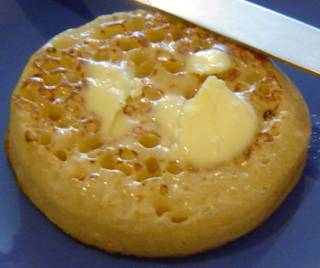

Crumpet Recipe

Description
This is a classic English baked good, somewhere between a pancake and an English muffin. They can be recognized by all the holes that are perfect to let the butter soak in.
Ingredients
- 150g white flour
- 200ml warm water
- 1/2 tsp salt
- 1/2 tsp white sugar
- 1 tsp baking powder
Steps
- Whisk flour, water, and salt for 2 minutes.
- Add yeast, sugar, and baking powder, then whisk for 30 seconds.
- Let rest in a very warm place for 15-30 minutes, until the surface is foamy.
- Grease rings and non-stick skillet with butter, then place rings in the skillet.
- Turn stove on medium high.
- Pour 1/4 cup of batter into each ring.
- Cook for 1 1/2 minutes, until bubbles start to appear.
- Turn heat to medium, then cook for 1 more minute. Bubbles should start to pop around the edges.
- Turn heat to medium low, then cook 2 1/2 to 4 minutes, utnil the surface is set.
- Remove rings, then flip and cook the other side for 20-30 seconds.
- Let cool, then eat with butter.
Home